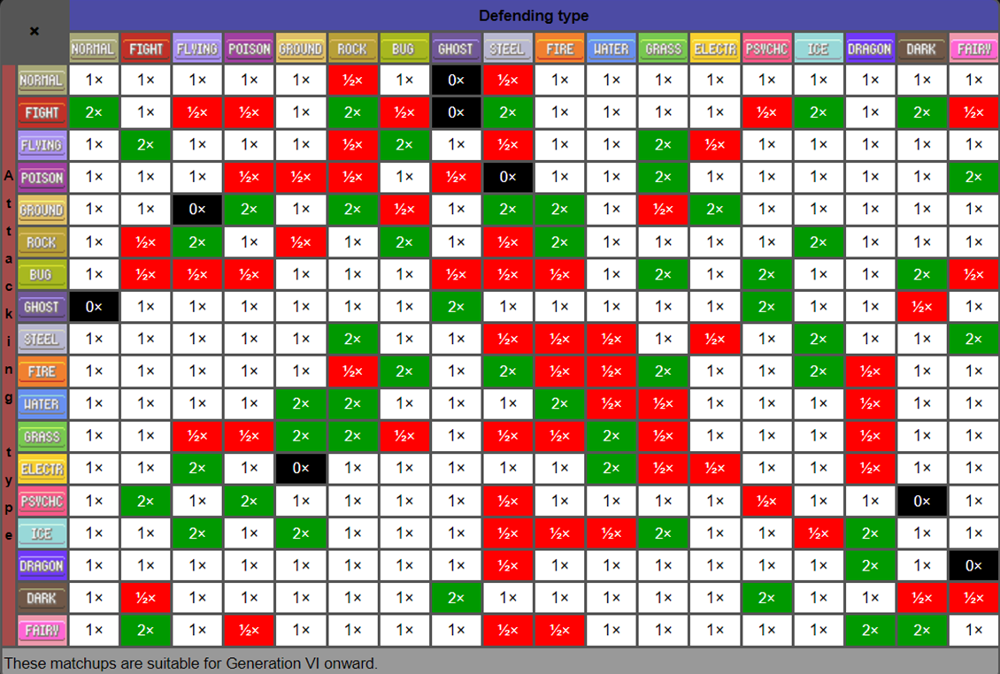

It's basically a Pokémon version of Rock-Paper-Scizors.
How to Play:
Choose a Pokémon (click as many times you like until you find a Pokémon you like)
Press the fight button and see what happens.(You will keep the Pokémon you have, but the opponent will change their Pokémon each time you click.
If you wanna go Russian Roulette style, test your luck. (hint hint, nudge nudge)
How it works:
The damage calculations is based on the chart shown below.
Your damage delt is detemined by comparing your Pokémon's types against the other Pokémon's types. The same is vice versa with the damage delt by the other Pokémon
In the case a Pokémon only has 1 type instead of 2, null damage is applied
The size of each Pokémon is also taken into account. If your Pokémon is bigger than the other Pokémon, You deal 0.5 more points of damage to the other (same with vice versa

Warnings: The "Feeling Lucky" button doesn't always work due to the fetch and promise components involved (or you're just unlucky). If this is the case, just run it normally or try the button again.
This is a fan-made, school project created by Erik Q. Birch. All creative rights go to Nintendo.